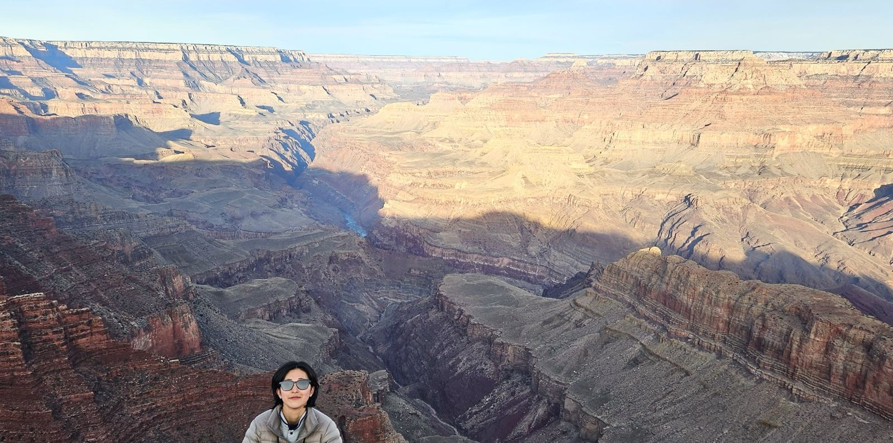

How far ahead can we forecast sunlight?
Lead-time-dependent subseasonal forecast skill and seasonal variability of surface downward shortwave radiation, using GloSea6 hindcasts, reanalysis, and observation-based datasets.
GloSea6hindcastSW↓S2S

Atmospheric scientist · Research Intern, Climate Policy Division, Korea Meteorological Administration
Hi, I'm Eunyeong. I study how a changing climate reshapes weather and climate extremes — and how well we can see them coming.
I hold an M.S. in Atmospheric Sciences from Chungnam National University, where I built sunshine-duration and solar-radiation models for solar power assessment. I am currently a research intern at the Korea Meteorological Administration, verifying GloSea6 subseasonal forecasts of surface solar radiation and analyzing Climate Impact Drivers under CMIP6 projections. Before atmospheric science I trained in physics, and I have worked in the field calibrating satellite sensors on the Mongolian steppe.
Lead-time-dependent subseasonal forecast skill and seasonal variability of surface downward shortwave radiation, using GloSea6 hindcasts, reanalysis, and observation-based datasets.
Future changes in extreme-heat-related Climate Impact Drivers (CIDs) and cooling degree days (CDDs) under CMIP6 climate projections.
The physical mechanisms and predictability of weather and climate extremes in a changing climate — the question I want to pursue next.
★ key contribution
